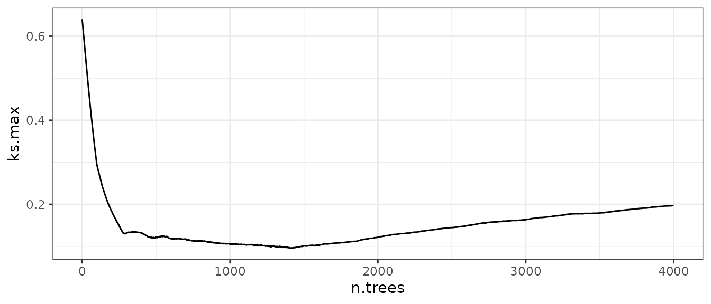

Optimizing Tuning Parameters for Balance
Source:vignettes/optimizing-balance.Rmd
optimizing-balance.RmdPart of using balancing methods, including matching, weighting, and subclassification, involves specifying a conditioning method, assessing balance after applying that method, and repeating until satisfactory balance is achieved. For example, in propensity score score subclassification, one needs to decide on the number of subclasses to use, and one way to do so is to try a number of of subclasses, assess balance after subclassification, try another number of subclasses, assess balance, and so on. As another example, in estimating the propensity score model itself, one might decided which covariates to include in the model (after deciding on a fixed set of covariates to balance), which covariates should have squares or interactions, and which link function (e.g., probit, logit) to use. Or choosing the number of matches each unit should receive in k:1 matching, or which value of the propensity score should be used to trim samples, etc.
Essentially, these problems all involve selecting a specification by varying a number of parameters, which are sometimes called “tuning parameters”, in order to optimize balance. Many popular methods adjust tuning parameters to optimize balance as inherent parts of the method, like genetic matching (Diamond and Sekhon 2013), which tunes variance importance in the distance matrix, or generalized boosted modeling (McCaffrey, Ridgeway, and Morral 2004), which tunes the number of trees in the prediction model for propensity scores. This strategy tends to yield methods that perform better than methods that don’t tune at all or tune to optimize a criterion other than balance (e.g., prediction accuracy) Pirracchio and Carone (2018).
As of version 4.5.0, cobalt provides the functions
bal.compute() and bal.init() to aid in
selecting these tuning parameters in an efficient way without needing to
manually program the computation of the balance statistic used as the
criterion to optimize. This vignette explains how to use these
functions, describes the balance statistics that are available, and
provides examples of using these functions to implement new and existing
balancing methods yourself. These functions are primarily for use inside
other packages but may be useful to users experimenting with new
methods. For a complete way to assess balance for a single
specification, users should use bal.tab() and
bal.plot() instead.
bal.compute() and bal.init()
Broadly, these functions work by taking in the treatment, covariates
for which balance is to be computed, and a set of balancing weights and
return a scalar balance statistic that summarizes balance for the
sample. bal.compute() does the work of computing the
balance statistic, and bal.init() processes the inputs so
they don’t need to be processed every time bal.compute() is
called with a new set of weights.
For bal.init(), we need to supply the covariates, the
treatment, the name of the balance statistic we wish to compute,
sampling weights (if any), and any other inputs required, which depend
on the specific balance statistic requested. bal.init()
returns a bal.init object, which is then passed to
bal.compute() along with a set of balancing weights (which
may result from weighting, matching, or subclassification).
Below, we provide an example using the lalonde dataset.
Our balance statistic will be the largest absolute standardized mean
difference among the included covariates, which is specified as
"smd.max". We will first supply the required inputs to
bal.init() and pass its output to
bal.compute() to compute the balance statistic for the
sample prior to weighting.
library(cobalt)
#> cobalt (Version 4.5.5.9001, Build Date: 2025-04-07)
data("lalonde", package = "cobalt")
covs <- subset(lalonde, select = -c(treat, race, re78))
# Initialize the object with the balance statistic,
# treatment, and covariates
smd.init <- bal.init(covs,
treat = lalonde$treat,
stat = "smd.max",
estimand = "ATT")
# Compute balance with no weights
bal.compute(smd.init)
#> [1] 0.8263093
# Can also compute the statistic directly using bal.compute():
bal.compute(covs,
treat = lalonde$treat,
stat = "smd.max",
estimand = "ATT")
#> [1] 0.8263093The largest absolute standardized mean difference with no weights is
0.8263, which we can verify and investigate further using
bal.tab():
bal.tab(covs,
treat = lalonde$treat,
binary = "std",
estimand = "ATT",
thresholds = .05)
#> Balance Measures
#> Type Diff.Un M.Threshold.Un
#> age Contin. -0.3094 Not Balanced, >0.05
#> educ Contin. 0.0550 Not Balanced, >0.05
#> married Binary -0.8263 Not Balanced, >0.05
#> nodegree Binary 0.2450 Not Balanced, >0.05
#> re74 Contin. -0.7211 Not Balanced, >0.05
#> re75 Contin. -0.2903 Not Balanced, >0.05
#>
#> Balance tally for mean differences
#> count
#> Balanced, <0.05 0
#> Not Balanced, >0.05 6
#>
#> Variable with the greatest mean difference
#> Variable Diff.Un M.Threshold.Un
#> married -0.8263 Not Balanced, >0.05
#>
#> Sample sizes
#> Control Treated
#> All 429 185We can see that the largest value corresponds to the covariate
married.
Now, lets estimate weights using probit regression propensity scores
in WeightIt and see whether this balance statistic
decreases after applying the weights:
library("WeightIt")
w.out <- weightit(treat ~ age + educ + married + nodegree +
re74 + re75, data = lalonde,
method = "glm", estimand = "ATT",
link = "probit")
# Compute the balance statistic on the estimated weights
bal.compute(smd.init, get.w(w.out))
#> [1] 0.06936946After weighting, our balance statistic is 0.0694, indicating a significant improvement. Let’s try again with logistic regression:
w.out <- weightit(treat ~ age + educ + married + nodegree +
re74 + re75, data = lalonde,
method = "glm", estimand = "ATT",
link = "logit")
# Compute the balance statistic on the estimated weights
bal.compute(smd.init, get.w(w.out))
#> [1] 0.04791925This is better, but we can do even better with bias-reduced logistic regression (Kosmidis and Firth 2020):
w.out <- weightit(treat ~ age + educ + married + nodegree +
re74 + re75, data = lalonde,
method = "glm", estimand = "ATT",
link = "br.logit")
# Compute the balance statistic on the estimated weights
bal.compute(smd.init, get.w(w.out))
#> [1] 0.04392724Instead of writing each complete call one at a time, we can do a little programming to make this happen automatically:
# Initialize object to compute the largest SMD
smd.init <- bal.init(covs,
treat = lalonde$treat,
stat = "smd.max",
estimand = "ATT")
# Create vector of tuning parameters
links <- c("probit", "logit", "cloglog",
"br.probit", "br.logit", "br.cloglog")
# Apply each link to estimate weights
# Can replace sapply() with purrr::map()
weights.list <- sapply(links, function(link) {
w.out <- weightit(treat ~ age + educ + married + nodegree +
re74 + re75, data = lalonde,
method = "glm", estimand = "ATT",
link = link)
get.w(w.out)
}, simplify = FALSE)
# Use each set of weights to compute balance
# Can replace sapply() with purrr:map_vec()
stats <- sapply(weights.list, bal.compute,
x = smd.init)
# See which set of weights is the best
stats
#> probit logit cloglog br.probit br.logit br.cloglog
#> 0.06936946 0.04791925 0.02726102 0.06444577 0.04392724 0.02457557
stats[which.min(stats)]
#> br.cloglog
#> 0.02457557Interestingly, bias-reduced complimentary log-log regression produced
weights with the smallest maximum absolute standardized mean difference.
We can use bal.tab() to more finely examine balance on the
chosen weights:
bal.tab(covs,
treat = lalonde$treat,
binary = "std",
weights = weights.list[["br.cloglog"]])
#> Balance Measures
#> Type Diff.Adj
#> age Contin. -0.0089
#> educ Contin. -0.0246
#> married Binary -0.0012
#> nodegree Binary 0.0145
#> re74 Contin. -0.0209
#> re75 Contin. -0.0213
#>
#> Effective sample sizes
#> Control Treated
#> Unadjusted 429. 185
#> Adjusted 240.83 185If balance is acceptable, you would move forward with these weights in estimating the treatment effect. Otherwise, you might try other values of the tuning parameters, other specifications of the model, or other weighting methods to try to achieve excellent balance.
Balance statistics
Several balance statistics can be computed by
bal.compute() and bal.init(), and the ones
available depend on whether the treatment is binary, multi-category, or
continuous. These are explained below and on the help page
?bal.compute. A complete list for a given treatment type
can be requested using available.stats(). Some balance
statistics are appended with ".mean", ".max",
or ".rms", which correspond to the mean (or L1-norm),
maximum (or L-infinity norm), and root mean square (or L2-norm) of the
absolute univariate balance statistic computed for each covariate.
smd.mean, smd.max,
smd.rms
The mean, maximum, and root mean square of the absolute standardized
mean differences computed for the covariates using
col_w_smd(). The other allowable arguments include
estimand (ATE, ATC, or ATT) to select the estimand,
focal to identify the focal treatment group when the ATT is
the estimand and the treatment has more than two categories, and
pairwise to select whether mean differences should be
computed between each pair of treatment groups or between each treatment
group and the target group identified by estimand (default
TRUE). Can be used with binary and multi-category
treatments.
ks.mean, ks.max, ks.rms
The mean, maximum, or root-mean-squared Kolmogorov-Smirnov statistic,
computed using col_w_ks(). The other allowable arguments
include estimand (ATE, ATC, or ATT) to select the estimand,
focal to identify the focal treatment group when the ATT is
the estimand and the treatment has more than two categories, and
pairwise to select whether statistics should be computed
between each pair of treatment groups or between each treatment group
and the target group identified by estimand (default
TRUE). Can be used with binary and multi-category
treatments.
ovl.mean, ovl.max,
ovl.rms
The mean, maximum, or root-mean-squared overlapping coefficient
compliment, computed using col_w_ovl(). The other allowable
arguments include estimand (ATE, ATC, or ATT) to select the
estimand, focal to identify the focal treatment group when
the ATT is the estimand and the treatment has more than two categories,
and pairwise to select whether statistics should be
computed between each pair of treatment groups or between each treatment
group and the target group identified by estimand (default
TRUE). Can be used with binary and multi-category
treatments.
mahalanobis
The Mahalanobis distance between the treatment group means, which is
computed as
where
and
are the vectors of covariate means in the two treatment groups,
is the (generalized) inverse of the covariance matrix of the covariates
(Franklin et al.
2014). This is similar to "smd.rms" but the
covariates are standardized to remove correlations between and
de-emphasize redundant covariates. The other allowable arguments include
estimand (ATE, ATC, or ATT) to select the estimand, which
determines how the covariance matrix is calculated, and
focal to identify the focal treatment group when the ATT is
the estimand. Can only be used with binary treatments.
energy.dist
The total energy distance between each treatment group and the target
sample, which is a scalar measure of the similarity between two
multivariate distributions. See Huling and Mak
(2022) for
details. The other allowable arguments include estimand
(ATE, ATC, or ATT) to select the estimand, focal to
identify the focal treatment group when the ATT is the estimand and the
treatment has more than two categories, and improved to
select whether the “improved” energy distance should be used, which
emphasizes difference between treatment groups in addition to difference
between each treatment group and the target sample (default
TRUE). Can be used with binary and multi-category
treatments.
kernel.dist
The kernel distance between treatment groups, which is a scalar measure of the similarity between two multivariate distributions. See Zhu, Savage, and Ghosh (2018) for details. Can only be used with binary treatments.
l1.med
The median L1 statistic computed across a random selection of
possible coarsening of the data. See Iacus, King,
and Porro (2011) for
details. The other allowable arguments include l1.min.bin
(default 2) and l1.max.bin default (12) to select the
minimum and maximum number of bins with which to bin continuous
variables and l1.n (default 101) to select the number of
binnings used to select the binning at the median. covs
should be supplied without splitting factors into dummies to ensure the
binning works correctly. Can be used with binary and multi-category
treatments.
r2, r2.2, r2.3
The post-weighting
of a model for the treatment given the covariates. Franklin et al. (2014)
describe a similar but less generalizable metric, the “post-matching
c-statistic”. The other allowable arguments include poly to
add polynomial terms of the supplied order to the model and
int (default FALSE) to add two-way
interactions between covariates into the model. Using
"r2.2" is a shortcut to requesting squares, and using
"r2.3" is a shortcut to requesting cubes. Can be used with
binary and continuous treatments. For binary treatments, the McKelvey
and Zavoina
from a logistic regression is used; for continuous treatments, the
from a linear regression is used.
p.mean, p.max, p.rms
The mean, maximum, or root-mean-squared absolute Pearson correlation
between the treatment and covariates, computed using
col_w_corr(). Can only be used with continuous
treatments.
s.mean, s.max, s.rms
The mean, maximum, or root-mean-squared absolute Spearman correlation
between the treatment and covariates, computed using
col_w_corr(). Can only be used with continuous
treatments.
distance.cov
The distance covariance between the scaled covariates and treatment, which is a scalar measure of the independence of two possibly multivariate distributions. See Huling, Greifer, and Chen (2023) for details. Can only be used with continuous treatments.
Choosing a balance statistic
Given all these options, how should one choose? There has been some
research into which yields the best results (Franklin et al.
2014; Griffin et al.
2017; Stuart,
Lee, and Leacy 2013; Belitser et al. 2011;
Parast et al.
2017), but the actual performance of each depends on the
unique features of the data and system under study. For example, in the
unlikely case that the true outcome model is linear in the covariates,
using the "smd" or "mahalanobis" statistics
will work well for binary and multi-category treatments. In more
realistic cases, though, every measure has its advantages and
disadvantages.
For binary and multi-category treatments, only
"energy.dist", "kernel.dist", and
"L1.med" reflect balance on all features of the joint
covariate distribution, whereas the others summarize across balance
statistics computed for each covariate ignoring the others. Similarly,
for continuous treatments, only "distance.cov" reflects
balance on all features of the joint covariate distribution. Given these
advantages, "energy.dist" and "distance.cov"
are my preferences. That said, other measures are better studied,
possibly more intuitive, and more familiar to a broad audience.
Example
In this section, I will provide an example that demonstrates how
these functions could be used to replicate the functionality of existing
packages or develop new methods for optimizing balance. We will use
these functions to replicate the functionality of WeightIt
and twang for estimating propensity score weights for a
binary treatment using generalized boosted modeling (GBM). See
help("bal.compute") for another example that optimizes
balance to find the number of subclasses in propensity score
subclassification.
Tuning GBM for balance
GBM has many tuning parameters that can be optimized, but the key
parameter is the number of trees to use to calculate the predictions.
WeightIt and twang both implement the methods
described in McCaffrey, Ridgeway, and Morral (2004) for
selecting the number of trees using a balance criterion. Here, we will
do so manually both to understand the internals of these functions and
illustrate the uses of bal.compute() and
bal.init().
data("lalonde")
# Initialize balance
covs <- subset(lalonde, select = -c(treat, re78))
ks.init <- bal.init(covs,
treat = lalonde$treat,
stat = "ks.max",
estimand = "ATT")
# Fit a GBM model using `WeightIt` and `twang` defaults
fit <- gbm::gbm(treat ~ age + educ + married + race +
nodegree + re74 + re75,
data = lalonde,
distribution = "bernoulli",
n.trees = 4000, interaction.depth = 3,
shrinkage = .01, bag.fraction = 1)
trees_to_test <- seq(1, 4000)
p.mat <- predict(fit, type = "response",
n.trees = trees_to_test)
stats <- apply(p.mat, 2, function(p) {
# Compute ATT weights
w <- ifelse(lalonde$treat == 1, 1, p/(1-p))
bal.compute(ks.init, weights = w)
})
stats[which.min(stats)]
#> 1408
#> 0.09563649From these results, we see that using 1408 trees gives us the lowest maximum KS statistic of 0.0956. Out of interest, we can plot the relationship between the number of trees and our balance statistic to see what it looks like:
library("ggplot2")
ggplot() +
geom_line(aes(x = trees_to_test, y = stats)) +
theme_bw() +
labs(y = "ks.max", x = "n.trees")
Let’s compare this to the output of WeightIt:
library("WeightIt")
w.out <- weightit(treat ~ age + educ + married + race +
nodegree + re74 + re75,
data = lalonde, estimand = "ATT",
method = "gbm", n.trees = 4000,
stop.method = "ks.max")
# Display the best tree:
w.out$info$best.tree
#> 1
#> 735
# ks.max from weightit()
bal.compute(ks.init, weights = get.w(w.out))
#> [1] 0.08745454We can see that weightit() also selects 735 trees as the
optimum and the resulting maximum KS statistic computed using the
returned weights is equal to the one we computed manually. Using
twang also produces the same results.